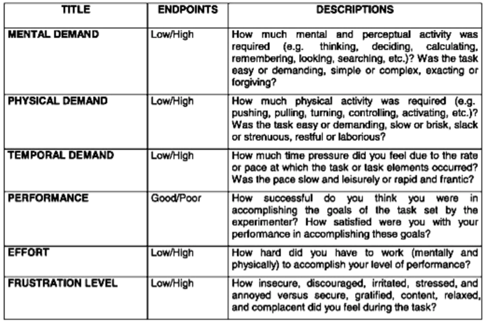
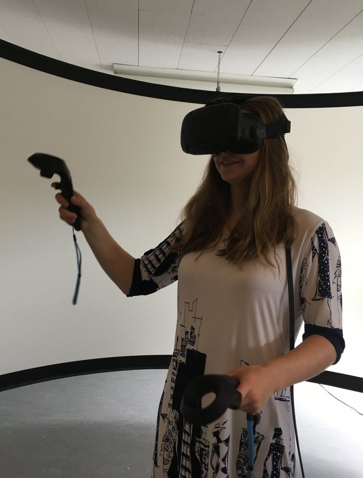

Researching as an NSF-Funded Intern in Oldenburg, Germany
This summer, I have been working as an IRES intern in Germany. The NSF IRES Program is a nine week international exchange program where students from the United States are able to experience research in another country.
When I began my Human-Computer Interaction research here in Oldenburg, I first created a timeline for my topic. My topic - researching workload on participants in Virtual Reality and automating the NASA-TLX Questionnaire - was multi-faceted. Many parameters go into the NASA-TLX Questionnaire (see below), so I had to narrow my research question down to just a few to fit my two-month timeline.
 Image from NASAI started working with the electroencephalogram (EEG) from Emotiv. I could use this device to gather data on frustration to fit one of the parameters for the NASA-TLX Questionnaire. I started writing a wrapper around the Emotiv BCI Application that would gather this data; however, this would not be integrated well into Unity for Virtual Reality and I abandoned my original idea. As I was about to move on to the next idea, we realized that we were not going to be granted access rights to the Emotiv SDK in a timely manner. Therefore, I moved on to the next piece of hardware: the heart rate monitor. There were, unfortunately, issues with this as well. We were unable to get the SDK for the heart rate monitor nor the proper charging device.
Not all was lost! From this experience of working with the Emotiv EEG, I learned that I am interested in Brain-Computer Interaction. What I found particularly interesting was learning about the science behind how the brain conducts signals to the EEG and how I could capture these signals from the device to create something novel in the virtual sphere.
After some struggles with the hardware and not being able to receive the SDKs, I began to grapple with the aGlass eye-tracking device. The purpose of this device was to measure eye data - in particular, pupil size - to be able to detect when a participant has increased mental workload whilst performing a task in Virtual Reality. Eventually, we were able to get the raw camera data from the aGlass, which we then started connecting to PupilLabs. Due to the difficulties configuring PupilLabs on Windows (we couldn't just run the compiled packages because of the camera settings), we decided to go our way and analyze it from scratch with openCV. The last step then was to integrate into my Unity scene and get a demo study up and running.
While my research experience was not necessarily straightforward, I would not have gone back and picked a different topic, for I learned a great deal over this past summer and my debugging skills have significantly improved because of it.
 Maggie in Virtual Reality